Задача 8.1. В пятиэтажном доме с четырьмя подъездами подсчитали число жителей на каждом этаже и, кроме того, в каждом подъезде. Могут ли все полученные 9 чисел быть нечетными?
Задача 8.2. Есть три комнаты и три мальчика: Петя, Вася и Коля. Каждый из мальчиков находится в какой-то из комнат. На двери одной из комнат написано: «Петя тут», на двери другой: «Вася тут», на двери третьей: «Коля тут». Известно, что одна из этих надписей неверна, а две другие верны. Докажите, что в одной из комнат находятся ровно два мальчика.
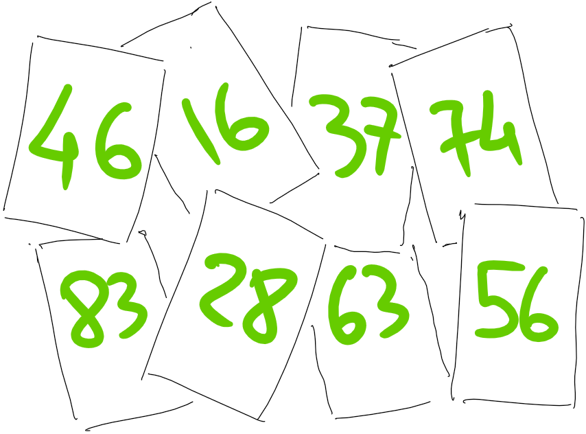 Задача 8.3.
На очередном занятии математического кружка каждый школьник получил 8 карточек с числами. Требовалось разложить карточки в две строчки (по 4 карточки в строчку) так, чтобы суммы чисел строчек были равны между собой. Петя разложил карточки так, как показано на рисунке, и немедленно заявил учителю, что задача не имеет решения.
а)
Почему Петя, не занимаясь подробным подсчётом, сделал такое заявление?
б)
Учитель согласился с ним, но сказал, что задачу всё-таки решить можно, надо только... Что сказал учитель? Как решить задачу?
Задача 8.4. В Мексике экологи добились принятия закона, по которому каждый автомобиль хотя бы один день в неделю не должен ездить (владелец сообщает полиции номер автомобиля и «выходной» день недели этого автомобиля). В некоторой семье все взрослые желают ездить ежедневно (каждый — по своим делам!). Сколько автомобилей должно быть в семье, если взрослых в ней 8 человек?
Задача 8.5. Три мальчика делили 120 фантиков. Сначала Петя дал Ване и Толе столько фантиков, сколько у них было. Затем Ваня дал Толе и Пете столько, сколько у них стало. И наконец, Толя дал Пете и Ване столько, сколько у них к тому моменту имелось. В результате всем досталось поровну. Сколько фантиков было у каждого в начале?
Задача 8.6. Известно, что Петя и Вася вместе поймали рыб столько же, сколько Коля и Толя вместе. Кроме того, Петя поймал рыб меньше, чем Толя. Кто поймал больше рыб — Вася или Коля?
Задача 8.7. У завхоза Васи было трое одинаковых чашечных весов. В одних потерялась часть деталей, и теперь они могут показывать что угодно. Любые весы помещаются на одну чашу других весов. За какое наименьшее количество взвешиваний можно определить неисправные весы?
Задача 8.8. Разрежьте фигуру с вырезанным квадратиком на две одинаковые части, из которых можно составить вторую фигуру. Части разрешается и поворачивать, и переворачивать. \begincenter 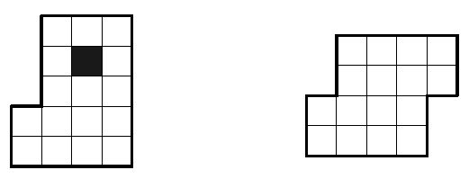
\ответ \begincenter 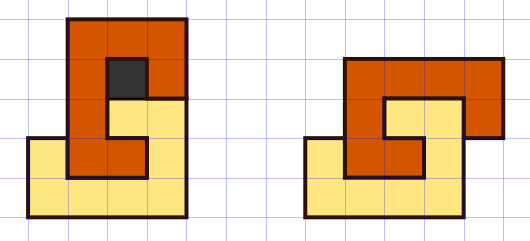 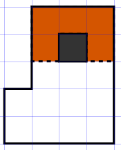 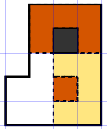
Дополнительные задачи
Задача 8.9. Коля заплатил 60 рублей за одну тетрадь, два карандаша и резинку. Саша — 135 рублей за две тетради, три карандаша и три резинки. Сколько заплатил Антон за две тетради, пять карандашей и одну резинку?
Задача 8.10. Как на стол поставить ровно 8 одинаковых кубиков так, чтобы полностью были видны ровно 23 грани кубиков, а остальные грани видны не были?
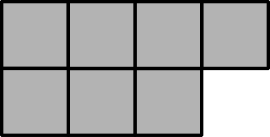Задача 8.11. Каждый из трех игроков записывает 100 слов, после чего записи сравнивают. Если слово встретилось хотя бы у двоих, то его вычеркивают из всех списков. Могло ли случиться так, что у первого игрока осталось 54 слова, у второго — 75 слов, а у третьего — 80 слов?
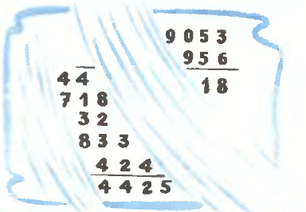Задача 8.12. Когда учитель вошёл в класс, дежурный стирал запись предыдущего урока, которую учитель собирался использовать. Остановив дежурного, учитель попросил его по оставшимся цифрам восстановить стёртые. Можно ли это сделать?
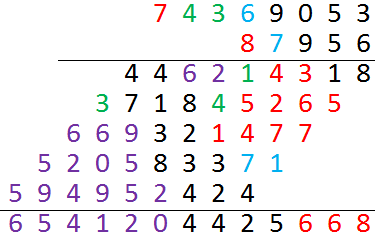 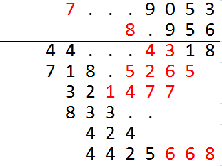 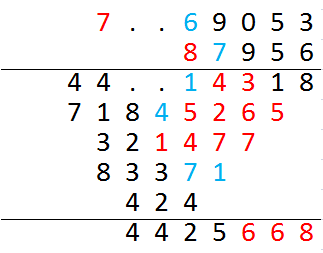 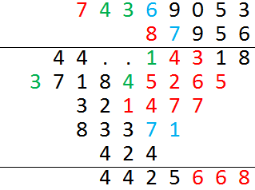